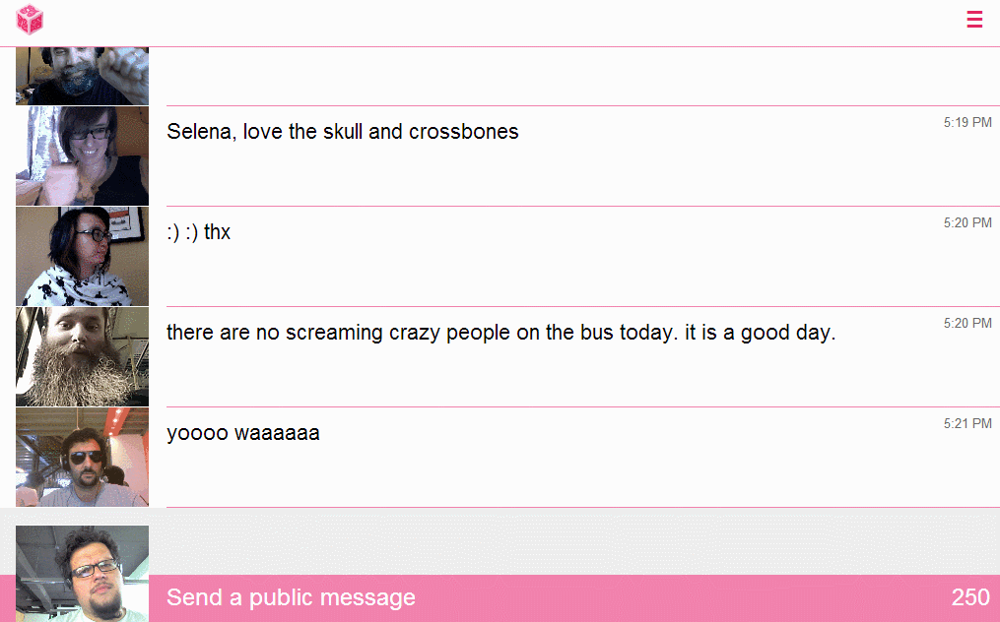

For my Experimental Research Methods class, we were tasked with running a qualitative study on a topic of our choosing. Our study investigated the relationship between moving images and the ability to recall associated text in a converstional setting. Specifically, animated gifs used as avatars in an online forum.
I got the idea for the study from Jen Fong-Adwent's chat.meatspac.es, which is a chat room that records and posts a looping gif from a user's webcam every time they post text.
There are a lot of interesting design choices in chat.meatspaces, and it's been really interesting to watch it evolve based on how the community uses it, especially since it's an open source project where users can make pull requests to officially support actions they see a need for.
I had been reading Jen's posts about designing and developing the chatroom, and along with some interesting reasons for maintaining a single channel chat, I spent a lot of time thinking about her idea that by pairing animation and text the interactions on Meatspace Chat were more memorable.
If the timing of an animation combined with text is executed in a single message, then the results are a lot more memorable than a realtime video clip that is either shorter or longer term.
...
The Audience now sees a looping image along with your text. They see it again. And again. They associate the text with the looping imagery. Now think about how effective this is in communicatin a moment across to others.
There were two parts as I saw it: remembering interactions better, and having a richer sense of someone over time. I think, based on some blog posts, that Jen sees the Meatspace community's tightness as being accelerated because of the gif + text format. It's a really interesting premise, but it was a bit too nebulous for our study, which had to be purely quantitative, and would be conducted over a relatively short period of time.
So I narrowed.
I focused on the idea of pairing imagery and text. I had an idea that researchers found pairing images with text to help memory in some studies. That's why we have flashcards with visual aids for learning a language. So we moved into that area in the lit review as a group. We found that past studies had found that pairing images with audio and text can increase both cued and free recall. (More on those in a minute.) Earlier studies had also compared the recognition of moving images andstatic images, finding that people were able to remember moving images better than they were able to remember static images.
we had to narrow our scope in terms of the setting for the experiment as well, but before I talk about that I just want to cover two types of recall we we found in our lit review – "Cued recall" and "free recall". Cued recall refers to the ability to recall something after being given a prompt or cue about the information being remembered. An example could be a multiple choice question. Free recall describes a scenario in which there are no prompts that provide help in remembering what the participant has seen or interacted with. This could take the form of a free response question that asks a participant to summarize the information they were presented with earlier in a study.
While we were discovering that past studies had found that pairing images with audio and text can increase both free recall and cued recall I was taking a stab at designing a study around a chat experience and running into trouble.
The first challenge we ran into was having a chat experience and maintaining any sort of internal validity. I experimented with cloning Meatspace and running my own local instance where I could have pre-written messages posted the same way for our participants. I realized pretty quickly that this wouldn't work. The subject would be able to view the conversation, but it would be difficult to make them feel like a participant without letting them, you know, participate, and seeing the conversation react to them. Given our time constraints I decided to move on quickly.
I thought it would be important for our external validity to maintain the conversational setting. Gifs have experienced a pretty pronounced resurgence over the last few years, and some new services like Ello and Meatspaces are experimenting with animated avatars. In order to have avatars I needed some sort of conversation, but I needed it to be unchanging. And in order to be able to ask questions that didn't have subjective answers, I needed the conversation to be about something. So I went to the most well behaved community online.
I wanted the text to be something that occurred naturally online – Something that wasn't fabricated. We could have edited something to keep it mostly on topic, but at Metafilter it was pretty easy to find a thread that didn't stray. We cut the thread to ten posts for brevity's sake, but left the content otherwise unaltered. We left the usernames as well, which I had some ethical concerns about, but I didn't expect the study to get much exposure, and the source of the material wasn't listed anywhere. Then, I added the avatars, which I sourced from a meatspace blog that shares moments from the site for people who missed them. I made static images from those same gifs to keep them as similar as possible.
We wound up with this design, which was a combination of Metafilter and Meatspaces. We left some of the original thread's metadata for context, to show it was a forum thread and put a little chrome around it, like a thread title.
We created three treatments, one with animated avatars, one with static images, and a baseline that had no avatars at all and just displayed usernames to identify the posters. Participants were randomly served one of these treatments and had two minutes to read the thread. After those two minutes had passed they received a distraction task in the form of a short video, and then they received a questionaire about the thread.
We had two hypotheses:
H1: The animated image will strengthen the association between the images and the accompanying content, therefore improving cued recall for the participants who receive the animated gif treatment over those who receive the treatment with no image or static images
H2: Those who receive the static image treatment will show better cued recall than those in the control group (no image)
We tried a few different formats, but they wre all multiple choice with four possible choices so we would only be looking at cued recall, and there would be the same chance of a correct guess on each question.
We had picking something that doesn't belong:
What was NOT one of the benefits xingcat gave for meeting at Dunkin Donuts?
A. It’s safe
B. Other people are there
C. If the other person doesn’t show up you still get to have a donut
D. Dunkin Donuts are everywhere